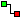

Der Schalter ist ein: Der Draht ist rot (es liegt ein Signal an) und die Lampe leuchtet.
Selbst bauen
Wählen Sie Panelwahl › Neues Standardpanel und löschen Sie, was Sie nicht brauchen, oder beginnen Sie mit einem leeren Panel.
Klicken Sie in der Bauteilleiste auf den Schalter und dann links auf das Panel.
Klicken Sie auf die Lampe und setzen Sie sie rechts auf das Panel.
Klicken Sie auf

Verbindung. Ziehen Sie einen Draht vom
Ausgang des Schalters zum Eingang der Lampe.
Siehe Verbindungen.
Ausprobieren
Klicken Sie auf Simulation starten.
Klicken Sie auf den Schalter: Die Lampe geht an. Noch einmal klicken: Die Lampe geht aus.
Ein Draht überträgt ein Signal: ein (1) oder aus (0). Ein roter Draht bedeutet „ein“.
Wo Plus und Minus sind, lesen Sie unter Wo sind Plus und Minus?
Übung
Lassen Sie denselben Schalter zwei Lampen gleichzeitig ein- und ausschalten.
Lösung
Setzen Sie eine zweite Lampe auf das Panel und ziehen Sie einen zweiten Draht, ebenfalls vom Ausgang des
Schalters. Von einem Ausgang dürfen mehrere Drähte ausgehen: Jeder Draht überträgt dasselbe Signal.